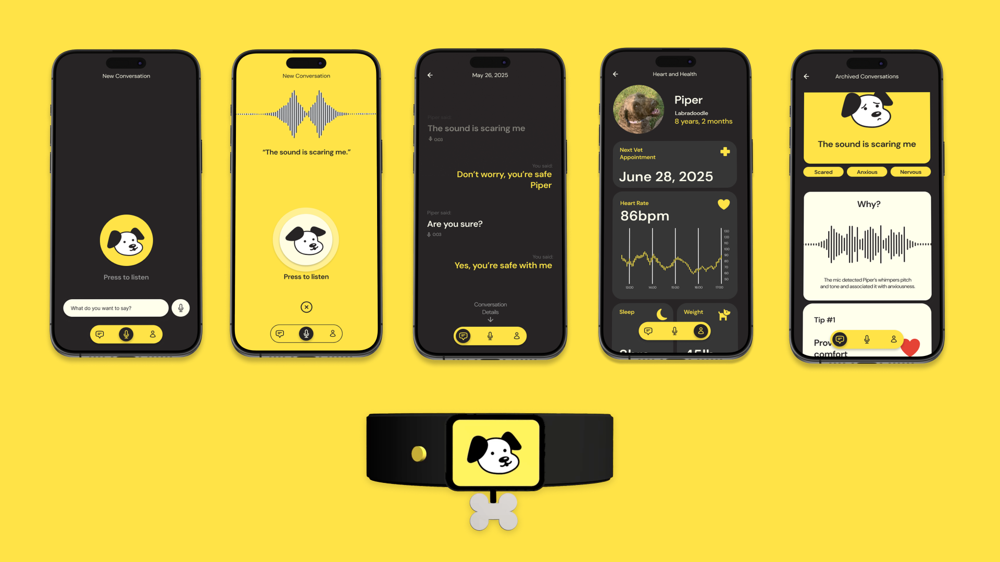
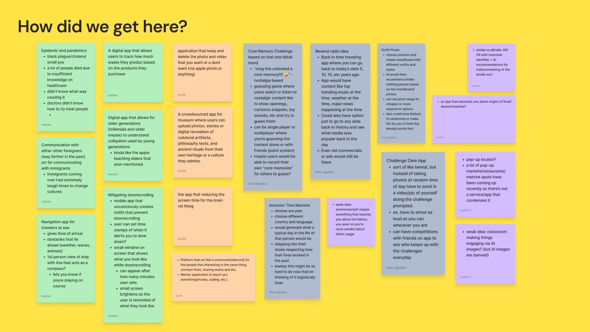
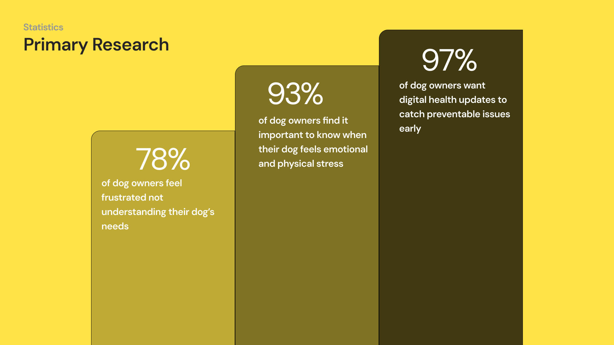
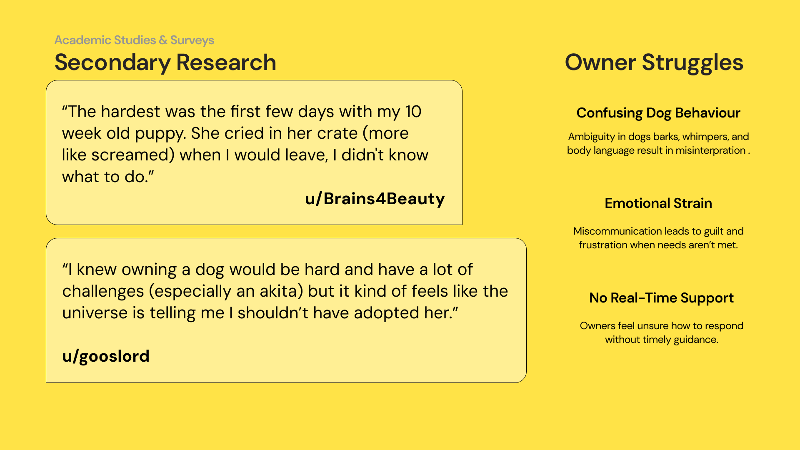
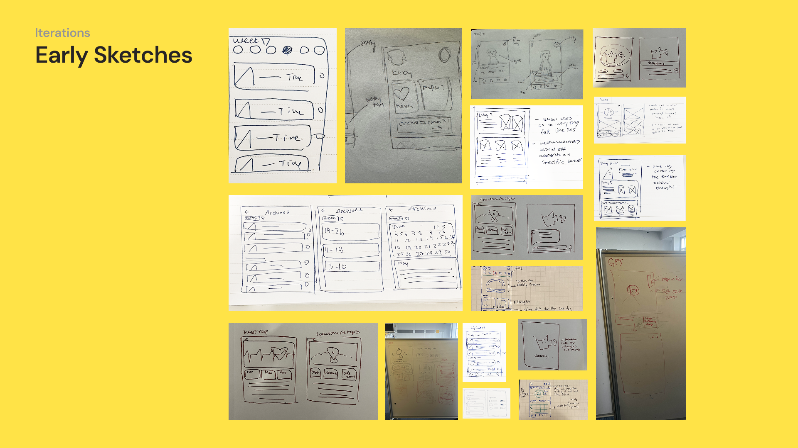
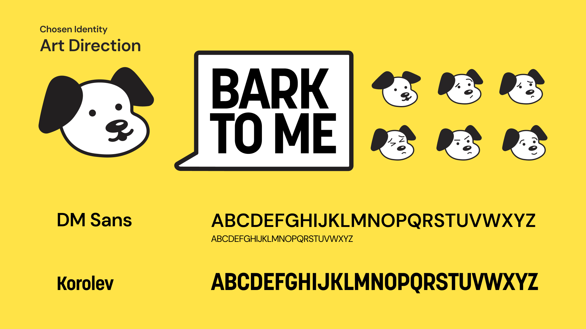
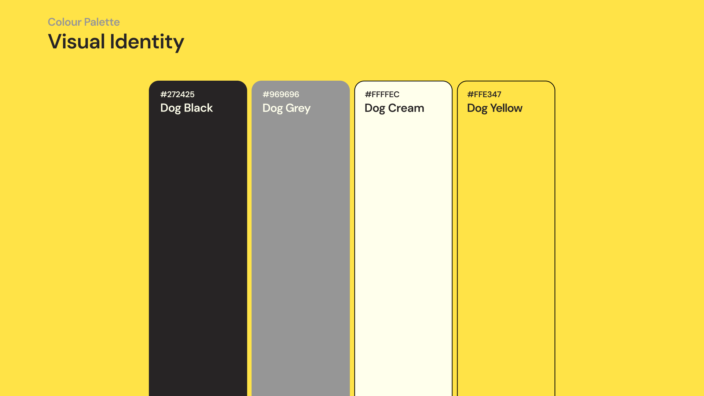

Throughout the 2 weeks of the design jam, My team completed the development of "Bark to Me," a speculative concept exploring a future where humans and dogs can converse through two-way communication. With a smart collar and an AI-powered app, human speech is translated into dog-friendly vocalizations. I was in charge of conducting the initial research, establishing the brand alignment, and directing and filming the speculative advertisement
Design Focus: Speculative Design Concept


Our team kicked off with a fast-paced brainstorming and ideation process, which involved organizing the sticky notes to identify the potential concepts. And of course we decided to move forward with the idea of dog-friendly approach.
Dog owners are struggling to figure out what their pets need emotionally and physically, according to our recent user research.

Once we decided to move forward with the idea of an app that bridges the communication gap between humans and pets, our first step was to identify real pain points. We began by conducting a survey targeting dog owners, asking how they felt about the concept, what challenges they face with their pets, and what they wish they could better understand. The responses were clear: many pet owners struggle to interpret what their dog needs and they are eager for a tool that could help.

However, survey results alone were not enough to fully support our concept. To strengthen our direction, we dug deeper into secondary research by exploring online forums, articles, and academic studies on human-animal communication. We found compelling evidence that AI is already making progress in decoding dog vocalizations, grounding our idea in emerging technology.
We also came across personal stories that revealed the emotional challenges of pet ownership which highlights a common pain point of the uncertainty and helplessness many feel when they cannot understand their pet’s behaviour.

With a clear concept in mind, our team began sketching out key features that would form the core of the app. We drew inspiration from familiar apps to ensure ease of use, integrating recognizable elements like map tracking, chat interactions, and fitness/wellness dashboards. This approach helps users feel more confident and comfortable right from the start. To make the experience feel unique, we explored our own art direction and visual style. Through several rounds of sketches, we refined both the interface and the personality of the app, building something that felt both intuitive and distinctive.
After finalized art direction and visual identity and we received encouraging feedback from mentors, I designed the app’s personality through branding: rounded typography and color palette These decisions created an identity that users described as “pet-friendly” and “futuristic” By leaning on brand strategy, the design positioned BarkToMe not just as an app, but as an empathetic companion tool for pet owners.

We chose a colour palette that reinforces these values: black and grey for a clean, modern foundation, cream for warmth, and yellow to highlight key actions with energy and friendliness. Yellow was not just a stylistic choice. Fun fact, it is one of the few colours dogs can actually perceive, making it both human and dog friendly.

As production lead, I crafted a motion-driven spec ad that introduced BarkToMe’s brand voice. The animation and editing emphasized warmth, humor, and approachability, aligning with the app’s identity and making the speculative concept feel market-ready.